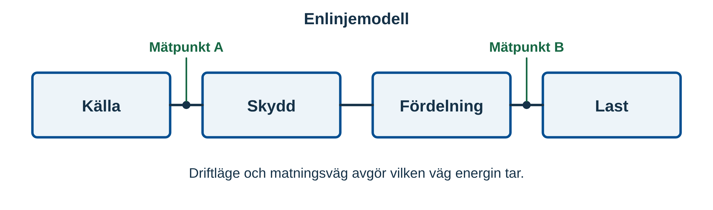
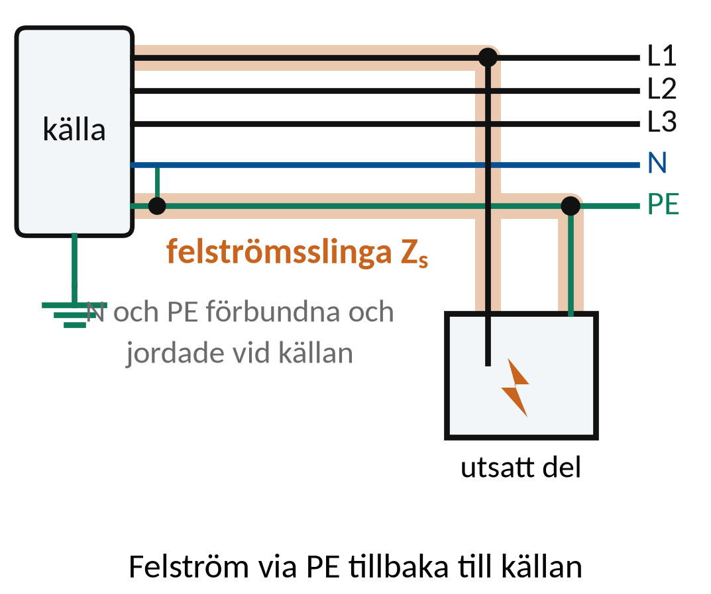
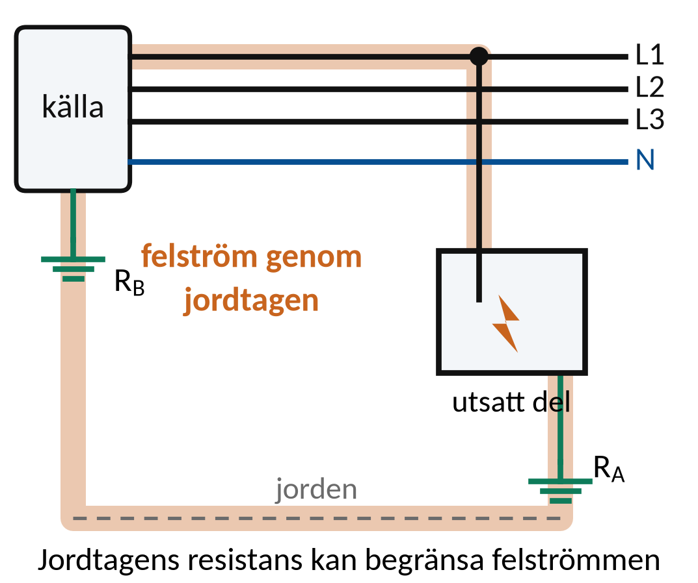
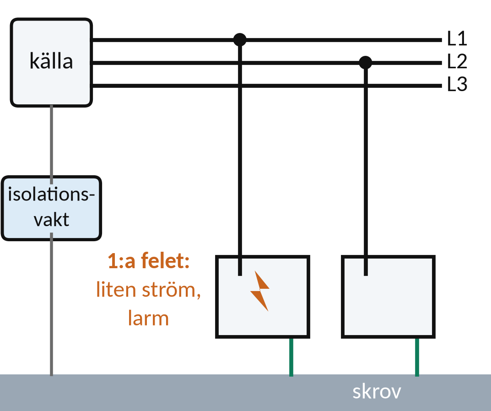
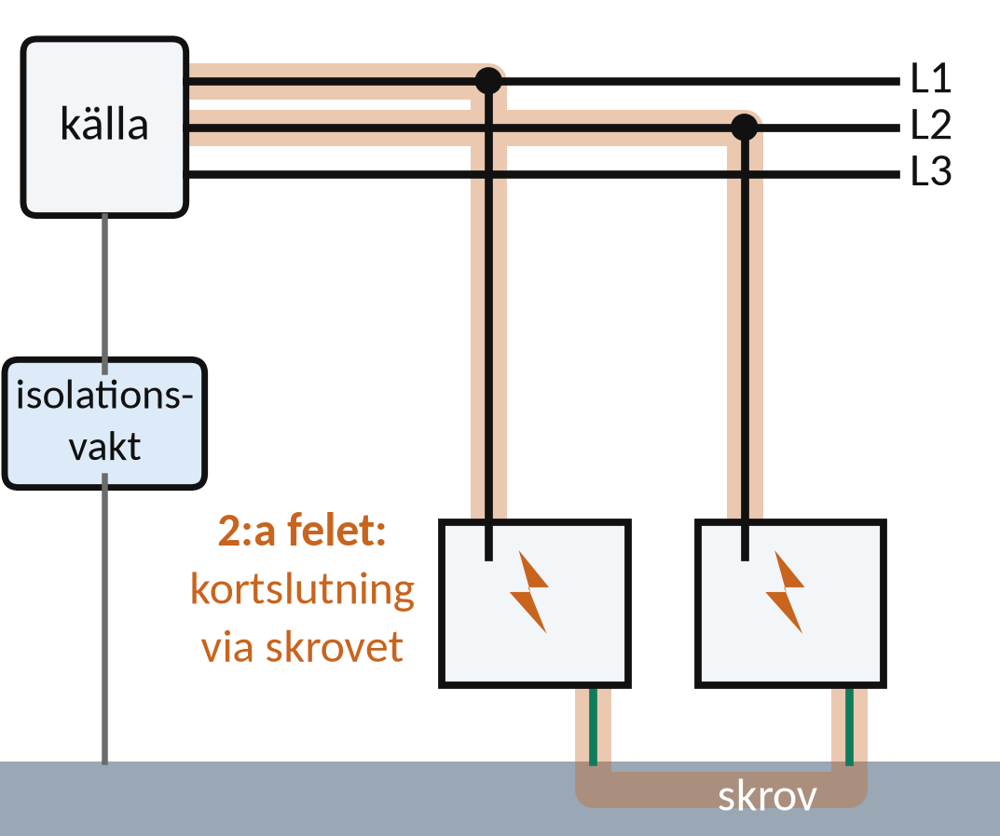
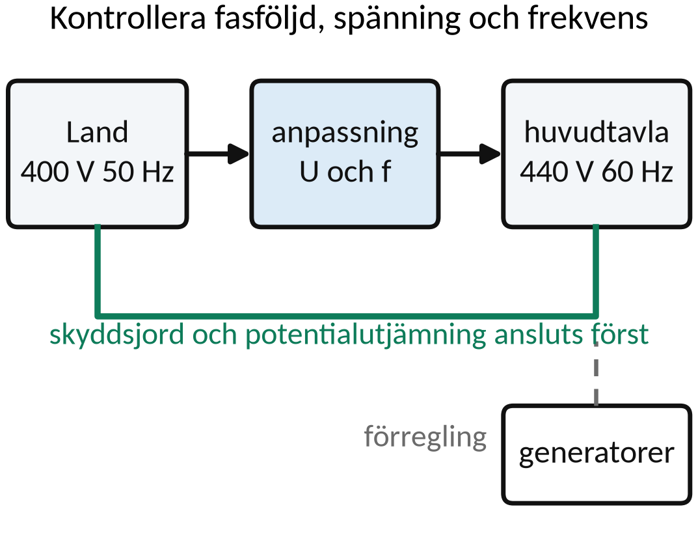
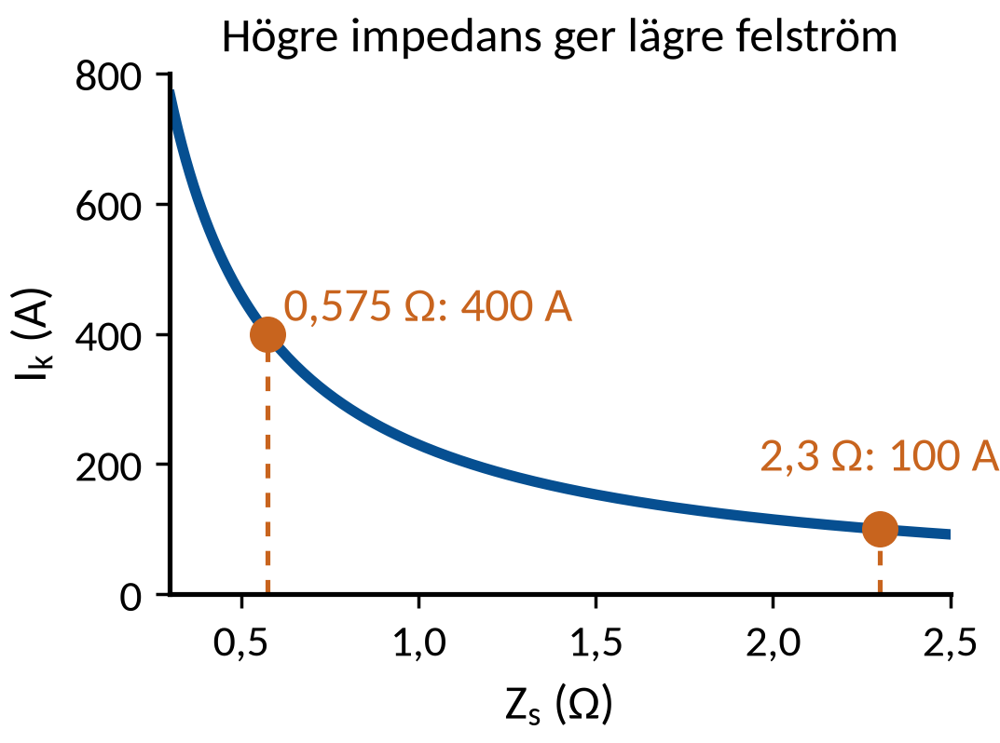
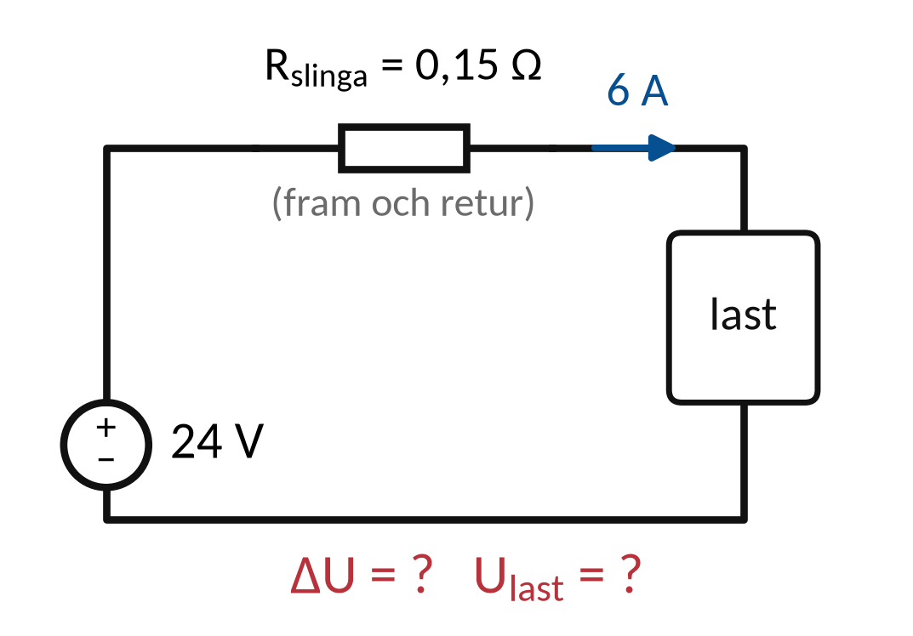
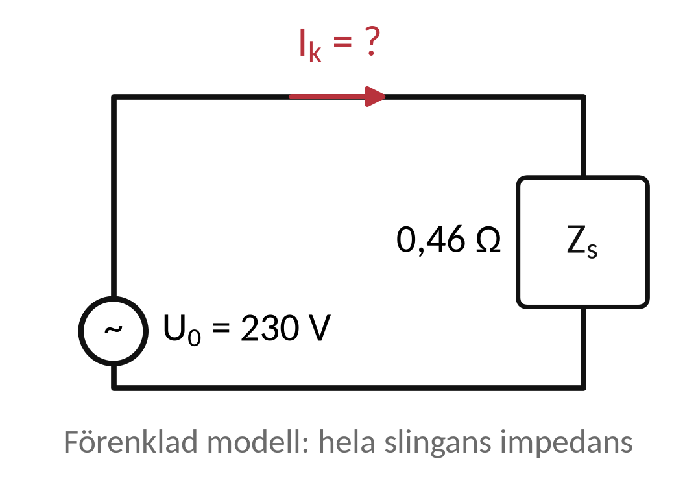

Vecka 44 · Del 1 av 3
Del 1: Lågspänningssystem
1 Översikt
Det här ska du kunna
- Förklara jordningssystemens grundprinciper.
- Analysera spänningsfall och en förenklad felström.
Fundera först: Vad betyder första bokstaven och andra bokstaven i TN, TT och IT? Svaret finns i teorin nedan.
Så gör du
- Läs teorin (8 korta avsnitt). Titta på figuren till varje avsnitt.
- Följ exemplen med papper och räknare, steg för steg.
- Gör övningarna 1.1–1.10. Fastnar du: Ledtråd 1 visar vilket samband du behöver och var i teorin det förklaras. Ledtråd 2 visar hur du börjar och Ledtråd 3 exemplet som räknar samma sorts uppgift med andra tal. Öppna facit när du har ett eget svar.
- Lämna in veckans uppgifter: Veckans inlämning.
Så skriver du en lösning som går att följa
1. Givet och sökt
Skriv av värden, enheter och vad du ska bestämma.
2. Samband och villkor
Välj formel eller princip. Kontrollera koppling, driftfall och antaganden.
3. Uträkning och kontroll
Omvandla enheter, sätt in värden och tolka resultatet.
I resonemangsfall: koppla observation till en motiverad slutsats.
Lärarens presentation · PDF · Räknarhjälp · Formelblad
Förkortningar och beteckningar i den här delen (4)
- IT-nät
- isolerat nät (franska: isolé–terre). Nät utan direkt förbindelse mellan systemet och jord eller skrov. Vanligt ombord. Behandlas i vecka 44.
- S
- skenbar effekt. Spänning gånger ström: S = U · I. Det som kablar och generatorer måste dimensioneras för. Enhet: VA, kVA.
- DC
- likström, likspänning (engelska: direct current). Ström eller spänning med samma riktning hela tiden, till exempel från ett batteri. På multimetern V⎓ eller DC.
- Hz
- hertz. Enheten för frekvens: 1 Hz är en period per sekund. Elnätet ombord är ofta 50 eller 60 Hz. 1 kHz = 1 000 Hz.
2 Teori
Läs avsnitten i ordning. Övningarna hänvisar hit.
1. Matning, jordning och skydd
Enlinjeschema visar huvudvägar och systemgränser.
TN, TT och IT beskriver relationen mellan källa, jord och utsatta delar.
N är neutralledare och PE skyddsledare. De har olika uppgifter.
Zs är felströmsslingans impedans. Dess belopp påverkar tillgänglig felström.
2. Matning och fördelning
Ett enlinjeschema visar systemets huvudvägar.
Källa, kopplingsapparater, skydd och laster bildar en kedja.

Driftläge och matningsväg påverkar analysen
Reservmatning kan ändra tillgänglig kortslutningsström.
Skydden ska fungera även i de avsedda reservdriftfallen.
3. TN-system
En punkt i källan är jordad. Utsatta delar ansluts till denna punkt genom skyddsledarsystemet.

TN-S: separat PE och N
Felströmsslingans impedans påverkar bortkopplingen.
PE och N har olika funktion även om potentialerna kan vara nära.
4. TT-system
Källans jordning och installationens jordtag är åtskilda i princip.
Jordfelsslingan går genom jordningsvägarna.

Jordfelsfunktionen är central i skyddet
Jordtagsresistanser kan begränsa felströmmen så att överströmsskydd ensamt inte ger avsedd bortkoppling.
TT-system är ovanliga ombord.
5. IT-system och övervakning
Källan är isolerad från jord eller ansluten genom hög impedans.
Utsatta delar har skyddsjordning eller motsvarande skyddsutjämning.

Första isolationsfelet ska upptäckas och hanteras
Isolationsövervakningen ger information om försämrad isolation.
Fortsatt drift är villkorad av systemets skydd och rutiner.
6. Första och andra felet
Ett första jordfel i ett korrekt utformat IT-system kan ge låg felström.
Ett andra fel på annan aktiv ledare kan ge stor ström.

Driftkontinuitet kräver snabb felhantering
Ett larm får inte ignoreras bara för att lasten fortfarande går.
Kvarstående första fel försämrar marginalen inför nästa fel.
7. Beräkning som stöd
För en enkel DC-slinga gäller ΔU = IR.
En förenklad felströmsmodell använder hela slingimpedansen.
Iₖ ≈ U₀/Zs
230 V och Zs = 0,32 Ω ger cirka 720 A.
Verklig dimensionering kräver skyddsdata och fler villkor.
8. Landanslutning ombord
Landström är ofta 400 V/50 Hz, fartygets nät ofta 440 V/60 Hz.
Spänning och frekvens måste passa innan laster kopplas in.

Kontrollera före inkoppling
Fasföljd, spänning och frekvens. Skyddsjord och potentialutjämning ansluts först.
Förregling mot generatordrift. Landnätets jordning kan skilja sig från fartygets. HV-landström: IEC/IEEE 80005-1.
3 Exempel
Följ exemplet steg för steg med papper och räknare. Övningarna använder samma metod med andra tal.
Exempel: systemets gräns
Ett enlinjeschema visar en transformator mellan huvudnätet och ett separat styrnät.
Varje delnäts jordningssätt bedöms för sig
- Identifiera sekundärsystemets källa och ledare.
- Kontrollera dess relation till jord samt skyddsförbindelser.
- Bestäm skydd och övervakning för just det delnätet.
Primärsidans jordningssystem bevisar inte hur sekundärsidan är uppbyggd.
Exempel: felström och impedans
En förenklad felströmsslinga har U₀ = 230 V och Zs = 0,575 Ω.

Iₖ ≈ U₀/Zs
- Iₖ ≈ 230/0,575 = 400 A.
- Om Zs ökar till 2,3 Ω blir Iₖ ≈ 230/2,3 = 100 A.
- Jämför båda strömmarna med aktuellt skydds utlösningskurva.
Utlösningstid kan inte bestämmas utan skyddsdata. Modellen visar hur högre Zs minskar felströmmen.
4 Övningar
Räkna på papper. Bocka av en övning när du har kontrollerat ditt svar mot facit. Avbockningen sparas i den här webbläsaren.
Övning 1.1: TN-S
Vad skiljer PE och N i ett TN-S-system?
Givet: Frågan gäller TN-S. Andra system kan vara uppbyggda på annat sätt.
Ledtråd 1: vilken princip?
Utgå från N leder normal returström, PE har skyddsfunktion. Läs Teori 1: Matning, jordning och skydd.
Ledtråd 2: hur börjar jag?
I TN-S är neutralledare N och skyddsledare PE separata längs den berörda delen av systemet. Jämför ledarnas uppgift i normaldrift och vid fel. Skilj funktion från ett tillfälligt lika potentialvärde.
Ledtråd 3: samma metod i ett exempel
Samma sätt att resonera: Exempel: systemets gräns. Gör likadant med fallet i den här uppgiften och motivera varje steg.
Facit
N leder returström i normal drift. PE leder ingen ström i normal drift och leder felström vid fel. I TN-S är de separata ledare.
Övning 1.2: TT-princip
Varför är det ofta jordfelsbrytaren som måste koppla bort ett fel i ett TT-system?
Givet: TT-system där felströmmen går genom två separata jordtag. Jordfelsbrytaren känner av differensström.
Ledtråd 1: vilken princip?
Utgå från Ifel ≈ U/Zfel. Läs Teori 4: TT-system.
Ledtråd 2: hur börjar jag?
Hög impedans i felslingan begränsar strömmen, så den kanske inte räcker för att ett överströmsskydd ska lösa ut. Förklara varför felströmmen måste jämföras med skyddets utlösningsström och vad jordfelsbrytaren tillför.
Ledtråd 3: samma metod i ett exempel
Samma sätt att resonera: Exempel: systemets gräns. Gör likadant med fallet i den här uppgiften och motivera varje steg.
Facit
Felströmmen går genom två jordtag och blir ofta för liten för att ett överströmsskydd ska lösa snabbt. Jordfelsbrytaren reagerar på den lilla differensströmmen.
Övning 1.3: IT-princip
Vad övervakar isolationsvakten i ett IT-system, i princip?
Givet: En principfråga. Ingen larmgräns anges.
Ledtråd 1: vilken princip?
Utgå från IT-systemets isolation övervakas mot jord. Läs Teori 5: IT-system och övervakning.
Ledtråd 2: hur börjar jag?
Fasledarna är isolerade från jord eller anslutna via en hög impedans, och utsatta delar är skyddsjordade. Ange vad isolationsvakten mäter och varför en försämring måste tas på allvar.
Ledtråd 3: samma metod i ett exempel
Samma sätt att resonera: Exempel: systemets gräns. Gör likadant med fallet i den här uppgiften och motivera varje steg.
Facit
Isolationsresistansen mellan de aktiva ledarna och jord. En försämring varnar innan ett andra fel uppstår.
Övning 1.4: Larm utan stopp
Isolationslarmet går i ett IT-system men lasten fortsätter. Varför är detta ingen grund för att ignorera larmet?
Givet: Isolationslarmet är aktivt, men lasten fungerar. Om driften får fortsätta beror på systemets skydd och rutiner.
Ledtråd 1: vilken princip?
Utgå från Första fel och andra fel har olika konsekvenser. Läs Teori 6: Första och andra felet.
Ledtråd 2: hur börjar jag?
I ett rätt byggt IT-system ger det första felet bara en liten ström, men ett andra fel på en annan ledare kan bli allvarligt. Förklara varför en last som fungerar inte betyder att isolationen är hel, och vad som behöver göras.
Ledtråd 3: samma metod i ett exempel
Samma sätt att resonera: Exempel: systemets gräns. Gör likadant med fallet i den här uppgiften och motivera varje steg.
Facit
Det första felet ger liten ström och driften fortsätter. Ett andra fel på en annan fas blir en kortslutning via skrov eller jord. Därför ska felet lokaliseras och åtgärdas snabbt.
Övning 1.5: Fartygssystem
Ett fartyg har flera transformatorer och delnät. Kan man utan schema säga att hela fartyget har ett och samma jordningssystem?
Givet: Fartyget har flera transformatorer och delnät. Det finns inget enlinjeschema.
Ledtråd 1: vilken princip?
Utgå från Transformatorer och systemgränser skiljer delnät. Läs Teori 1: Matning, jordning och skydd.
Ledtråd 2: hur börjar jag?
Olika delnät kan vara jordade på olika sätt och ha olika skydd och källor. Ange vilket underlag du behöver för att avgöra jordningssystemet för varje del.
Ledtråd 3: samma metod i ett exempel
Samma sätt att resonera: Exempel: systemets gräns. Gör likadant med fallet i den här uppgiften och motivera varje steg.
Facit
Nej. Varje delnät kan ha eget jordningssystem. Enlinjeschemat och uppgifter om transformatorer, jordning och skydd behövs för varje del.
Övning 1.6: DC-fördelning
En 24 V-last tar 6 A. Slingresistansen i matningen är 0,15 Ω. Beräkna spänningsfallet och lastspänningen.
Givet: Likspänning: Ukälla = 24 V, I = 6 A, Rslinga = 0,15 Ω.

Ledtråd 1: vilket samband?
Använd ΔU = I · Rslinga; Ulast = Ukälla − ΔU. Läs Teori 7: Beräkning som stöd.
Ledtråd 2: hur börjar jag?
Rslinga gäller både fram- och returledaren. Räkna ut spänningsfallet och dra det från källans spänning.
Ledtråd 3: samma metod i ett exempel
Samma metod med andra tal: Exempel: felström och impedans. Följ stegen där och gör sedan likadant med talen i den här uppgiften.
Facit
ΔU = 6 · 0,15 = 0,9 V. Ulast = 23,1 V.
Svar: ΔU ≈ 0,9 V · Ulast ≈ 23,1 V
Övning 1.7: Förenklad felström
I en förenklad beräkning är U0 = 230 V och Zs = 0,46 Ω. Beräkna Ik.
Givet: Förenklad beräkning med U0 = 230 V och Zs = 0,46 Ω.

Ledtråd 1: vilket samband?
Använd Ik ≈ U0/Zs. Läs Teori 1: Matning, jordning och skydd.
Ledtråd 2: hur börjar jag?
Ik är felströmmen, U0 den drivande spänningen och Zs impedansen i hela felslingan. Dela spänningen med slingimpedansen. Svaret räcker inte ensamt för att välja skydd.
Ledtråd 3: samma metod i ett exempel
Samma metod med andra tal: Exempel: felström och impedans. Följ stegen där och gör sedan likadant med talen i den här uppgiften.
Facit
Ik = 230/0,46 = 500 A.
Svar: Ik ≈ 500,0 A
Övning 1.8: Ändrad slingimpedans
Zs ökar från 0,46 till 0,92 Ω vid oförändrade 230 V. Hur ändras felströmmen?
Givet: U0 = 230 V. Impedansen ökar från 0,46 till 0,92 Ω.
Ledtråd 1: vilket samband?
Använd I1 = U0/Zs1; I2 = U0/Zs2. Läs Teori 5: IT-system och övervakning.
Ledtråd 2: hur börjar jag?
1 och 2 står för de två fallen. Vid samma U0 blir strömmen hälften så stor när Zs blir dubbelt så stor. Räkna ut båda strömmarna och ange hur mycket strömmen ändras.
Ledtråd 3: samma metod i ett exempel
Samma metod med andra tal: Exempel: felström och impedans. Följ stegen där och gör sedan likadant med talen i den här uppgiften.
Facit
Ik halveras till 250 A.
Övning 1.9: Reservkraft
Med normal matning kan felströmmen bli 1 000 A, men vid reservdrift bara 200 A. Vad behöver kontrolleras när skydden planeras?
Givet: Möjlig felström 1 000 A med normal matning och 200 A på reserv. Inga utlösningskurvor är givna.
Ledtråd 1: vilken princip?
Utgå från Skydd måste ge avsedd bortkoppling i varje driftfall. Läs Teori 4: TT-system.
Ledtråd 2: hur börjar jag?
Hur snabbt ett överströmsskydd löser beror på strömmen och skyddets ström–tidkurva. Ange vad som måste kontrolleras i båda fallen. Ange ingen utlösningstid – skyddets data saknas.
Ledtråd 3: samma metod i ett exempel
Samma sätt att resonera: Exempel: felström och impedans. Gör likadant med fallet i den här uppgiften och motivera varje steg.
Facit
Att skyddet löser inom avsedd tid även vid 200 A i reservdrift, inte bara vid 1 000 A. Det kräver skyddets ström–tidskurva.
Övning 1.10: Nödmatning
En enda fördelning matar både ordinarie utrustning och nödutrustning. Vilken fråga måste dokumentationen svara på innan systemet kan bedömas?
Givet: Ordinarie utrustning och nödutrustning matas från samma fördelning. Fartygsdata och gällande krav är inte kända.
Ledtråd 1: vilken princip?
Utgå från Nödlastens behov styr frågor om matningsoberoende. Läs Teori 5: IT-system och övervakning.
Ledtråd 2: hur börjar jag?
Du måste veta vilka funktioner som ska fungera även när något går sönder. Ta reda på vilka nödlaster som finns, hur de reservmatas och vilka fel som kan slå ut både ordinarie utrustning och nödutrustning samtidigt.
Ledtråd 3: samma metod i ett exempel
Samma sätt att resonera: Exempel: felström och impedans. Gör likadant med fallet i den här uppgiften och motivera varje steg.
Facit
Vilka nödlaster som måste fungera, hur de matas vid bortfall och om fördelningen är en gemensam felpunkt för både ordinarie och nödmatning.
Klart med delen?
Vilket nytt fel kan göra ett kvarstående första isolationsfel betydligt farligare?
Spara systemskiss och beräkningar till v44-inlämningen. Markera vad som är beräkningsmodell och vilka skyddsdata som saknas.
5 Labben
Labben kommer sist i veckan, när du har gått igenom del 1–3. Du använder samma metod som i övningarna: räkna först, läs av, jämför och förklara.
Veckans labbar Veckans inlämning
Källor och fortsatt läsning
Studieplanen YH03151, 18 september 2026 Sjöskolans kursmaterial och originalmall
Schneider Electric: TN, TT och IT
Schneider Electric: IT-systemets princip
Transportstyrelsen: regler för el ombord